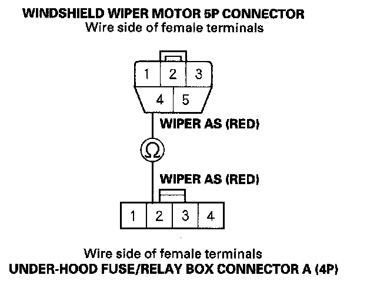
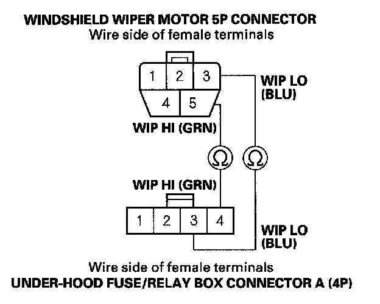
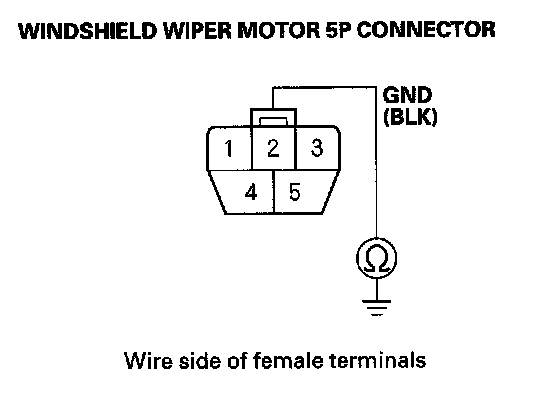

B1077
DTC B1077: Windshield Wiper Auto Switch Circuit Malfunction1. Turn the ignition switch ON (II), and the windshield wiper switch ON.
2. Check the windshield wiper operation.
Does the wiper work?
YES - Go to step 3.
NO - Go to step 13.
3. Clear the DTC with the HDS.
4. Turn the ignition switch OFF, and then back ON (II).
5. Turn the windshield wiper switch ON, and then OFF.
6. Check for DTCs with the HDS.
Is DTC B1077 indicated?
YES - Go to step 7.
NO - Intermittent failure, the system is OK at this time. Check for loose or poor connections.
7. Select BODY ELECTRICAL system select menu, then enter the DATA LIST menu.
8. Check the ON/OFF information of the FR WIPER AS with the HDS.
Is OFF indicated when the motor stopped, and ON intermittently indicated when the motor runs?
YES - Faulty relay control module, replace the under-hood fuse/relay box.
NO - Go to step 9.
9. Turn the ignition switch OFF.
10. Disconnect the windshield wiper motor 5P connector.
11. Disconnect the under-hood fuse/relay box connector A (4P).

12. Check for continuity between the windshield wiper motor 5P connector No. 4 terminal and the under-hood fuse/relay box connector A (4P) No. 2 terminal.
Is there continuity?
YES - Faulty relay control module, replace the under-hood fuse/relay box.
NO - Repair open in the wire.
13. Check the No. 11 (30 A) and No. 31 (15 A) fuses in the under-dash fuse/relay box.
Are the fuses OK?
YES - Go to step 12.
NO - Replace the fuse(s) and recheck the system.
14. Turn the ignition switch OFF.
15. Check the No. 11 (30 A) and No. 31 (15 A) fuses in the under-dash fuse/relay box.
Are the fuses OK?
YES - Go to step 16.
NO - Replace the fuse and recheck the system.
16. Do the wiper motor test.
Does the wiper motor run normally?
YES - Go to step 17.
NO - Replace the windshield wiper motor and recheck.
17. Disconnect the windshield wiper motor 5P connector.
18. Disconnect the under-hood fuse/relay box connector A (4P).

19. Check for continuity between the windshield wiper motor 5P connector No. 3 and No. 5 terminals and the under-hood fuse/relay box connector A (4P) No. 3 and No. 4 terminals.
Is there continuity?
YES - Go to step 20.
NO - Repair open in the wire.

20. Check for continuity between the windshield wiper motor 5P connector No. 2 terminal and body ground.
Is there continuity?
YES - Faulty relay control module, replace the under-hood fuse/relay box.
NO - Repair open in the wire or poor ground (G401).